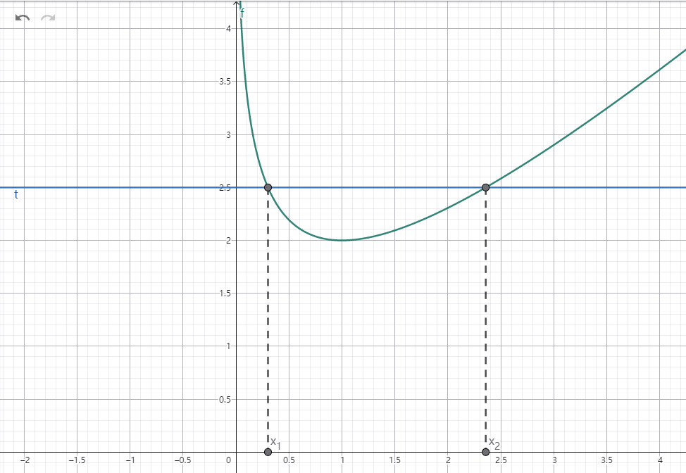

一道极值点偏移问题
g(x) = -1 - x + \ln{x} + tg(x_1) = g(x_2) = 0证明：x_1 + x_2 > t
证：

图：y = x - \ln{x} + 1 与 y = t
由 g(x) = 0 得：
-1 - x + \ln{x} + t = 0\Leftrightarrow x + 1 - \ln{x} = t如图1所示。
易得 t > 2，不妨设 0 < x_1 < 1 < x_2。
\begin{aligned}
& x_1 + x_2 > t \\
\Leftrightarrow & x_1 + x_2 > x_1 + 1 - \ln{x_1} \\
\Leftrightarrow & x_2 + \ln{x_1} > 1
\end{aligned}设 x_1 = x_1(t),\; x_2 = x_2(t)，h(t) = x_2 + \ln{x_1}，则只需证 h(t) > 1。
\begin{aligned}
& g(x_1) = -1 - x_1 + \ln{x_1} + t = 0 \\
& g(x_2) = -1 - x_2 + \ln{x_2} + t = 0
\end{aligned}即
\begin{aligned}
& t = 1 + x_1 - \ln{x_1} \\
& t = 1 + x_2 - \ln{x_2}
\end{aligned}两侧对 t 求导：
\begin{aligned}
& 1 = \left(1 - \frac{1}{x_1}\right) x_1'(t) \\
& 1 = \left(1 - \frac{1}{x_2}\right) x_2'(t)
\end{aligned}\begin{aligned}
& x_1'(t) = \frac{1}{1 - \frac{1}{x_1}} = \frac{x_1}{x_1 - 1} \\
& x_2'(t) = \frac{1}{1 - \frac{1}{x_2}} = \frac{x_2}{x_2 - 1}
\end{aligned}由 h(t) = x_2 + \ln{x_1}，对 t 求导：
\begin{aligned}
h'(t) &= x_2'(t) + \frac{x_1'(t)}{x_1} \\
&= \frac{x_2}{x_2 - 1} + \frac{\frac{x_1}{x_1 - 1}}{x_1} \\
&= \frac{x_2}{x_2 - 1} + \frac{1}{x_1 - 1} \\
&= \frac{x_1 x_2 - 1}{(x_1 - 1)(x_2 - 1)}
\end{aligned}已得 x_1 < 1 < x_2，下证 x_1 x_2 < 1。
由
\begin{cases}
t = 1 + x_1 - \ln{x_1} \\
t = 1 + x_2 - \ln{x_2}
\end{cases}上式减下式得：
x_2 - x_1 = \ln{x_2} - \ln{x_1} = \ln{\frac{x_2}{x_1}}设 p = \frac{x_2}{x_1} > 1，
\begin{cases}
x_2 - x_1 = \ln{p} \\
p = \frac{x_2}{x_1}
\end{cases}解得：
\begin{cases}
x_1 = \frac{p}{p-1} \ln{p} \\
x_2 = \frac{1}{p-1} \ln{p}
\end{cases}\begin{aligned}
x_1 x_2 &= \frac{p}{(p-1)^2} \ln^2{p} \\
&= \left( \frac{\sqrt{p}}{p-1} \ln{p} \right)^2
\end{aligned}下证 \frac{\sqrt{p}}{p-1} \ln{p} < 1。
\begin{aligned}
& \frac{\sqrt{p}}{p-1} \ln{p} < 1 \\
\Leftrightarrow & \ln{p} < \frac{p-1}{\sqrt{p}} \\
& \text{设 } q = \sqrt{p},\; q > 1 \\
\Leftrightarrow & 2\ln{q} < \frac{q^2 - 1}{q} \\
\Leftrightarrow & 2\ln{q} - \frac{q^2 - 1}{q} < 0
\end{aligned}设 m(q) = 2\ln{q} - \frac{q^2 - 1}{q}，
\begin{aligned}
m'(q) &= 2 \cdot \frac{1}{q} - 1 - \frac{1}{q^2} \\
&= \frac{2q - q^2 - 1}{q^2} \\
&= -\frac{(q-1)^2}{q^2} < 0
\end{aligned}\begin{gathered}
\therefore m(q) \text{ 在 } (1, +\infty) \text{ 上单调递减} \\
\because q \to 1,\; m(q) \to 0 \\
\therefore q > 1,\; m(q) < 0 \\
\therefore \frac{\sqrt{p}}{p-1} \ln{p} < 1 \\
\text{由 } (6) \text{ 得 } x_1 x_2 < 1
\end{gathered}\begin{aligned}
& \text{由 } (5) \text{ 得 } h'(t) = \frac{x_1 x_2 - 1}{(x_1-1)(x_2-1)} \\
& \because x_1 < 1,\; x_2 > 1,\; x_1 x_2 < 1 \\
& \therefore h'(t) > 0 \\
& h(t) \text{ 在 } (2, +\infty) \text{ 上单调递增} \\
& \text{当 } t \to 2 \text{ 时：} x_1 \to 1,\; x_2 \to 1,\; \ln{x_1} \to 0 \\
& h(t) = x_2 + \ln{x_1} \to 1 \\
& \therefore t > 2 \text{ 时 } h(t) > 1
\end{aligned}即证